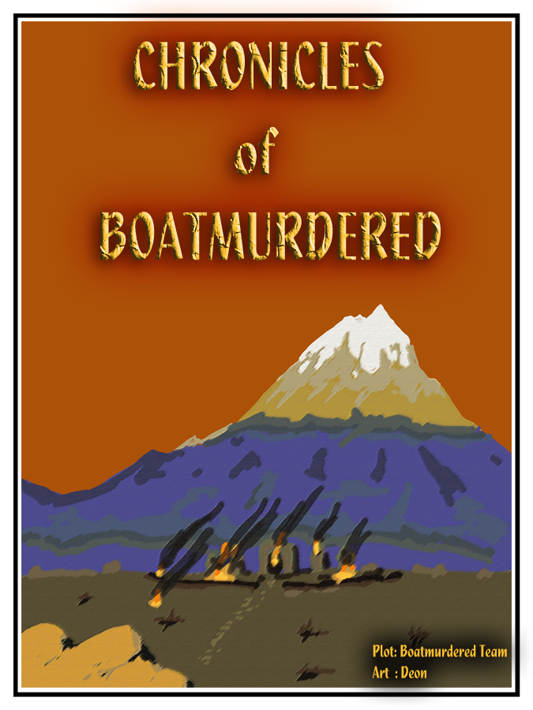

Imagination et Nains
 Dwarf fortress étant un jeu très abstrait de par ses graphismes, il se prête pas mal à l'imagination.
Dwarf fortress étant un jeu très abstrait de par ses graphismes, il se prête pas mal à l'imagination.
Ainsi, il est courant de pouvoir lire des histoires tirées d'aventures Dwarfiennes.
Dwarf fortress étant un jeu très abstrait de par ses graphismes, il se prête pas mal à l'imagination.
Ainsi, il est courant de pouvoir lire des histoires tirées d'aventures Dwarfiennes.

Les bloodlines sont des forteresses colloboratives jouées par plusieurs joueurs.
Il est possible d'avoir les récits de ces bloodlines.
Les bloodlines les plus célèbres:
 Ici, je vais vous mettre un petit compte rendu d'une aventure réalisée par mes soins dans le mode aventure.
Elle a été fait au fur et à mesure de l'aventure.
Ici, je vais vous mettre un petit compte rendu d'une aventure réalisée par mes soins dans le mode aventure.
Elle a été fait au fur et à mesure de l'aventure.
Mon héros s'appelle Thefin Rametuzu Nedorloli Slibtu qui signifie en anglais ""Thefin applebee the crazy butterfly of chaos""
Mon héro commence l'aventure, armé de son hallebarde. Il ne sait pas ou il va. Peut-être que ses amis pourront le lui dire.
Première conversatoin avec un gars nommé Vanod Urircema. Il nous parle de "Woodrink the Scaly Winter" un titan des marais mais il ne sait rien lui même du titan. Je lui demande la direction mais il n'en sait rien.
Je lui ai demandé de faire partie de mon équipe mais il n'a pas voulu.
Le fermier Umci Eveono me signal une armée qui marche vers Stillgilt.
J'ai fait provision de feuille de laitue comme en-cas pour le voyage.
Un gosse me conseille de ne pas partir seul à l'aventure. Quand je lui ai demandé s'il voulait venir avec moi, il n'a pas voulu.
Quelqu'un me prévient qu'il ne faut pas être seul la nuit, il parle de créatures de la nuit...des bogeymans.
Je n'ai trouvé personne pour m'accompagner dans mon voyage.
J'ai trouvé un bâtiment étrange appelé "The Dominion of voice" un peu à l'ouest du village.
Je rencontre une dame à l'intérieur elle s'appelle "Thudu Anirnifih". Je pense que c'est la maîtresse du village.
Elle me parle d'un groupe de bandit qui sévit dans la région (serait-ce une quête pour moi ?) Ils ont une ville appelée "Sparkledplum" dans la "Plain of Murders".
Elle me dit que c'est loin vers l'ouest.
J'ai enfin trouvé un compagnon, c'est un épéiste appelé "Luto Wuspingicast".
Second compagnon d'aventure, un soldat avec un marteau de guerre appelé "Sath Adorzin".
Nous partons à la chasse aux bandits.
Nous avons commencé à voyager vers "Sparkledplum".
Dans le "Primitive Desert" nous voyons quelqu'un au loin. C'est un nain soldat.
Je l'appelle de loin. Il dit s'appeler "Èzum Grottowalls". Il cherche du travail. Je propose qu'il se joigne à nous mais il ne veut pas.
Nous nous arrêtons pour manger. L'eau dans ma gourde est tellement gelée que je suis obligé de la faire fondre. J'accompagne mon eau d'une feuille de laitue.
Je vois un blaireau au loin. Je demande à mes compagnons de m'attendre pendant que je vais le chasser.
Je m'approche tout doucement, face contre terre. Il ne m'a pas vu, je suis juste derrière lui.
Je l'attaque par derrière d'un coup de mon hallebarde. Je l'achève d'un coup dans la nuque.
A nous de la viande. J'en salive d'avance.
Je suis tombé sur un groupe de chameau mais ils ont fui à mon arrivée. Dommage.
Nous avons poursuivi un chameau que nous avons acculé tous les trois. Je lui lançais des pierres pour le ralentir.
Le chameau a fait volte-face, j'arrive à me tenir derrière lui en courant. D'un coup de mon hallebarde, je poignarde son pied droit. Il ne peut plus courir.
Il est à ma merci. Je lui poignarde le cou. Mon arme reste coincée. Je lui donne un coup de pied dans le cou. Le chameau n'est toujours pas mort.
Mes compagnons arrivent. Nous nous acharnons sur la bête au sol. Pour finir, c'est la hache de guerre de Sath qui l'a achevée. Nous pourrons manger du chameau ce soir.
Coincé par une rivière, nous cherchions un moyen de la traverser quand nous avons surpris un blaireau. Luto l'a attaqué directement avec son épée. Ca nous fera de la viande en plus.
En arrivant à la rivière, nous nous sommes aperçus qu'elle est gelée, nous n'avons eu qu'à passer sur la glace.
Nous nous arrêtons prés de la rivière pour la nuit. Je mange le coeur du chameau que j'ai cuit sur le feu de camp. L'état de mes réserves d'eau m'inquiète. Les rivières que nous avons croisées étaient toutes gelées.
Un léopard nous attaqué pendant la nuit. Luto l'a tué vite fait.
Nous avons continué notre voyage une partie de la nuit. Nous sommes presque arrivés à destination.
Au petit jour, nous sommes arrivé dans un hameau. Ce lieu n'est pas celui que nous cherchons. Sparkledplum se trouve un peu plus à l'ouest.
Enfin le but de notre mission. Chassons les bandit de là.
Nous entrons dans la fortesse. Nous n'avons trouvé personne. Je suis fatigué, je ressens l'effet de la courte nuit.
Je me réveille, j'ai très soif. Il me faut de l'eau.
Nous avons trouvé le commandant des lieux. Nous l'attaquons.
Je l'attaque dans le cou mais le commandant pare mon attaque. Luto l'attaque de son épée et le touche au bras droit.
J'essaie de toucher le commandant avec mon hallebarde mais rate mon coup.
Luto arrive à le toucher de son épée d'un coup dans le ventre. Une artére est touchée. Le commandant supplie.
Nous ne l'écoutons pas. Sath l'attaque d'un coup de marteau dans le bras gauche. Je le poignarde dans le torse. Mon hallebarde reste coincée. Luto touche le pied droit.
Le commandant est tombé. Luto le touche à la tête. Une artère a été touché lors de l'attaque. L'épée reste fixement dans la blessure. Je donne un coup de pied dans le cou. Le commandant relâche sa pique. Luto reprend son épée et redonne un coup dans la tête du commandant. Le commandant meurt lors de l'attaque.
Je dépouille le mort. Il n'avait pas d'argent sur lui.
Nous nous enfonçons profondément dans la forteresse à la recherche de quelque chose à boire.
Les lieux sont déserts, nous partons.
La nuit tombe, je mande une feuille de laitue. J'ai soif.
J'ai trouvé la réserve de pierre précieuse des bandits. Ils en ont des tonneaus remplis et aucun ne contient de l'eau ou de la bière.
Je recherche le puit du village prés de la forteresse.
Enfin, j'ai puisé l'eau du puit, de la bonne eau.
Retour à Sparkledplum. Il n'y a personne. Nous ne trouvons aucun autre bandit.
Nous emportons une caisse pleine de pierres précieuses. Nous avons fait le plein de pierres précieuses et nous nous sommes enfuis.
Nous sommes revenus au hameau. Nous y avons bien dormi. Leur puit est bien utile.
Nous avons besoin d'une autre quête. Luto me parle d'une bête dangereuse appelée Olzul Clawstrife the renowned Colossus. Il se trouve dans le lieu appelé The Danger of Mastering. Il ne s'est pas ou ça se trouve.
Nous partons dans la nuit à la recherche de ce lieu ou du moins de quelqu'un qui sache ou ça se trouve.
Nous arrivons sur la côte. Nous nous arrêtons pour observer la mer. Celle-ci est gelée. Luto tue un crabe sur la plage.
Nous partons vers le sud dans l'espoir que notre quête aboutira.
En chemin nous rencontrons un autre voyageur. Un soldat avec un marteau de guerre. Nous lui proposons de venir mais il refuse.
La journée a été calme. La nuit arrive. Ma gourde est à nouveau vide. Fichu gourde. Nous nous reposons pour la nuit.
Le lendemain, nous recherchons le plus proche village ou ville.
En chemin nous découvrons une rivière. Hourra, elle n'est pas gelée. Je vais pouvoir m'abreuver.
Nous décidons de continuer vers la prochaine ville. Nous arrivons à Dunesqueen. Nous trouvons une forteresse abandonnée. Nous décidons d'y dormir la nuit.
Pendant la nuit, il a neigé. Je ramasse de la neige, ça me fera une provision d'eau.
Alors que nous arrivons prés d'un village, nous voyons prés d'un pont une femme muni d'un arc et un soldat muni d'une hache.
J'essaie de leur parler mais l'archer me décoche une flèche. Je l'évite de justesse.
Je lui lance une pierre mais elle l'évite. Luto se précipite sur l'archère. Il essaie de lui asséner des coup d'épée mais l'archère l'évite. Il charge et l'atteint de plein fouet et arrive à la sonner. Dans sa course, une flèche a atteint Luto. dans la jambe gauche. Il tombe.
Sath se joint dans l'attaque. Il frappe le pied droit de l'archère de son marteau. Il arrive dans le même mouvement à bloquer une flèche de son bouclier. Il en profite pour frapper son opposant sur la main gauche. Il tente une troisième attaque mais l'archère évite l'attaque. La quatrième attaque arrive à toucher à nouveau sur la main gauche.
Le combat fait rage. Je me dirige vers le porteur de hache qui ne semble pas encore avoir réagi.
Pendant ce temps, Sath charge l'archère et ils tombent tous les deux. Il est le premier à se relever. Il profite qu'elle est à terre pour la frapper à la tête avec son marteau de guerre.
Luto reprend conscience. Sath tue l'archère.
J'arrive face à face de l'autre ennemi. Je donne un coup vers son bras droit. L'ennemi perd son bouclier pendant mon coup.
Je poignarde l'ennemi dans les ventre d'un coup de mon hallebarde. Une artère est touchée par l'attaque.
J'attrappe le soldat au cou à l'aide de mon hallebarde. Il essaie de s'enfuir. Je lui donne un coup de pied.
Il continue à s'enfuir. Je le poignarde encore dans le ventre. Il tombe. Je l'achève d'un coup dans la tête.
Nous dépouillons les cadavres de leurs biens et repartons vers le plus proche hameau. Il n'y a pas âme qui vive. Nous reprenons notre chemin.
En chemin, nous rencontrons une nouvelle personne. Nous l'interpellons mais il s'enfuit en courant.
Nous le retrouvons un peu plus loin. J'essaie d'amener le dialogue avec lui mais Luto et Sath se précipitent vers lui. Il s'enfuit encore.
Nous le laissons en paix et reprenons notre chemin.
La nuit tombe, nous rencontrons encore des personnes. ils sont au moins deux. Un arbalétrier et un lancier. J'engage la conversation avec l'arbalétrier. Il me parle d'une bête appelée Zes Jadegems qui se trouve à Treasureflames. Il m'indique la direction à suivre.
Nous suivons la direction indiquée une grande partie de la journée. Nous arrivons prés d'une rivière à traverser. Elle n'est pas gelée. Je saute et nage jusqu'à l'autre rive.
Prochaine rivière, je fais pareil mais le courant est trop fort. J'essaie de lutter mais pas moyen. Je n'arriverais jamais de l'autre côté. Je meurt noyer dans cette rivière.